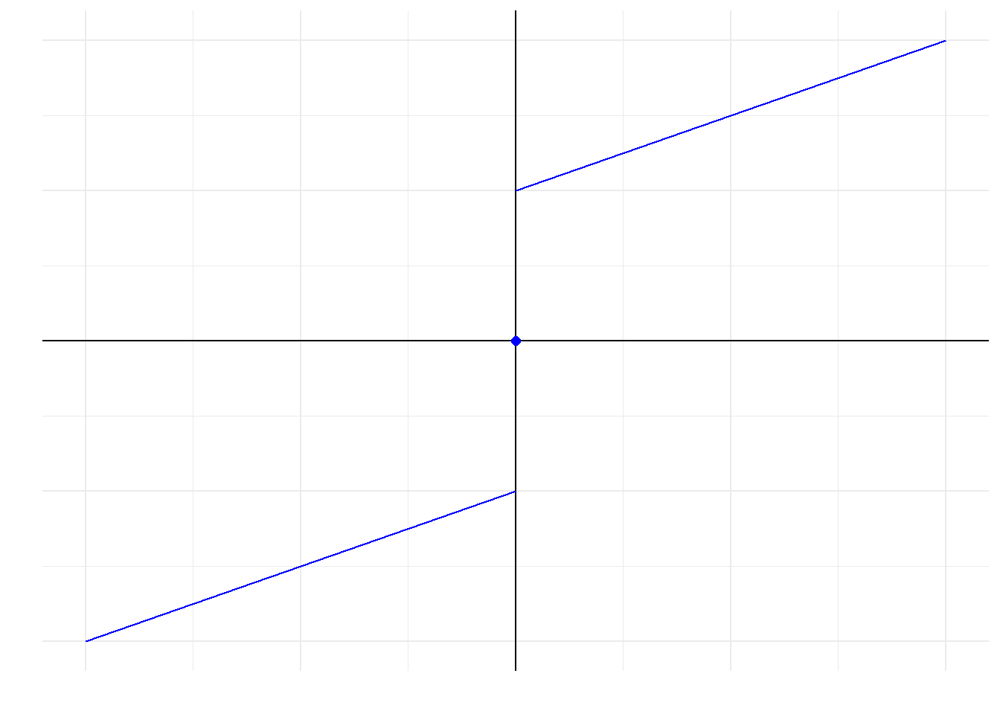

9.5 Cox比例风险模型
对于数据\(X_i=(X_{i1},\dots, X_{ip})^T\)，风险函数被定义为
\[ h_i(t)=h_0(t)\exp\{x_{i1}\beta_1+\dots+x_{ip}\beta_p\}=h_0(t)e^{X_i^T\beta} \tag{9.66} \]
其中\(h_0(t)\)被称为基线风险函数。
截距项被归到\(h_0(t)\)里了
考虑\(h_i(t|x)=h_0(t)e^{x_{i1}\beta_1}\)，称
\[ \frac{h_i(t|x+1)}{h_i(t|x)}=\frac{h_0(t)e^{x_{i1}\beta_1}e^{\beta_1}}{h_0(t)e^{x_{i1}\beta_1}}=e^{\beta_1} \tag{9.67} \] 这样的关系为“比例”关系。
9.5.1 偏对数似然函数
现有数据\((T_i,\delta_i, Z_i)\)，其中\(T_i\)表示记录的生存时间，\(\delta_i\)表示删失状态（1为非删失，0为删失），\(Z_i\)表示协变量。
回顾式(9.15)，写出Cox比例风险模型的似然函数。
\[ \begin{aligned} L(\theta)&=\prod_{i=1}^n \{f(\tau_i)\}^{\delta_i}\{S(\tau_i)\}^{1-\delta_i} \\ &= \prod_{i=1}^n \{h(\tau_i)\}^{\delta_i}S(\tau_i) \\ &= \prod_{i=1}^n [\{h_0(\tau_i)\exp(\beta^TZ_i)\}^{\delta_i}\exp\{-H_0(\tau_i)\exp(\beta^TZ_i)\}] \\ &= [\prod_{i=1}^n \{h_0(\tau_i)\exp(\beta^TZ_i)\}^{\delta_i}][\prod_{i=1}^n\exp\{-H_0(\tau_i)\exp(\beta^TZ_i)\}] \\ &= [\prod_{j=1}^D h_0(\tau_j)\exp(\beta^TZ_{(j)})] \exp\{-\sum_{i=1}^n\sum_{t_j \leq T_i}h_0(\tau_j)\exp(\beta^TZ_i)\} \\ &= [\prod_{j=1}^D h_0(\tau_j)\exp(\beta^TZ_{(j)})] \exp\{-\sum_{j=1}^D\sum_{i \in R_j}h_0(\tau_j)\exp(\beta^TZ_i)\} \end{aligned} \]
\(h(t)=\frac{f(t)}{S(t)},\; S(t)=\exp\{-H(t)\}\)
D表示非删失的对象数，指数处的\(\delta_i\)等价于就是对非删失的对象累乘
\(H_0(t)=\int_0^t h_0(x)dx\)，在实际中就是对不同死亡时刻的\(h_0(\tau)\)累加
\(R_j\)表示\(T_i \geq T_j\)的\(i\)的集合
9.5.2 Regularization Paths for Cox’s Proportional Hazards Model via Coordinate Descent
下面的内容是对Simon等人[1]论文的复现。
观测对象的数据结构为\((y_i,x_i,\delta_i)\)，分别表示生存时间、自变量向量、生存结局。其中\(\delta_i\)取值为1: failure time或0: censoring time。将\(\delta=1\)的failure time进行排序得到\(t_1 \leq t_2 \leq \cdots \leq t_m\)。
在有结点情况时才有可能取到等号
9.5.2.1 推导
以下内容为个人推导，与原文略有出入
1. 无结点情况
\[ L(\beta)=\prod_{i=1}^m \frac{e^{x_{j(i)}^T\beta}}{\sum_{j \in R_i }e^{x_j^T\beta}} \]
其中\(R_i\)表示\(t_i \leq y_j\)的\(j\)的集合，\(j(i)\)表示第\(i\)个failure time对应的观测对象\(j\)。
\[ \frac{2}{n}l(\beta)=\frac{2}{n}\begin{bmatrix}\sum_{i=1}^mx_{j(i)}^T\beta-\sum_{i=1}^m\log(\sum_{j \in R_i}e^{x_j^T\beta})\end{bmatrix} \]
这里的1/n相当于是权重，2是为了消掉泰勒展开中的1/2
令\(\eta=X\beta\)，对对数似然函数进行二阶泰勒展开
\[ \begin{aligned} l(\beta)&\approx l(\tilde \beta)+(\beta-\tilde \beta)^T\dot l(\tilde \beta)+(\beta-\tilde \beta)^T\ddot l(\tilde \beta)(\beta-\tilde \beta)/2 \\ &=l(\tilde \beta)+(X\beta-\tilde \eta)^Tl'(\tilde \eta)+(X\beta-\tilde \eta)^Tl''(\tilde \eta)(X\beta-\tilde \eta)/2 \end{aligned} \]
其中
\[ \frac{\partial l(\eta)}{\partial \beta}=(X^T)_{p \times n}l'(\eta)_{n \times 1}=\dot l(\beta)_{p \times1} \]
\((X_{\cdot k})^Tl'(\eta)=\dot l(\beta)_k\)
整理可得
\[ l(\beta)\approx\frac{1}{2}(z(\tilde \eta)-X\beta)^Tl''(\tilde \eta)(z(\tilde \eta)-X\beta)+C(\tilde \eta,\tilde \beta)\\ z(\tilde \eta)=\tilde \eta-l''(\tilde \eta)^{-1}l'(\tilde \eta) \]
经检验，原文该表达式没错
则
\[ \frac{2}{n}l(\beta)\approx\frac{1}{n}(z(\tilde \eta)-X\beta)^Tl''(\tilde \eta)(z(\tilde \eta)-X\beta)+\frac{2}{n}C(\tilde \eta,\tilde \beta) \]
原文指出，为了计算方便，仅取黑塞矩阵的对角线元素而无视其他元素，其余元素对最终结果的影响也较小。
故目标函数为
\[ M(\beta)=-\frac{1}{n}\sum_{i=1}^nw(\tilde \eta)_i(z(\tilde \eta)_i-x_i^T\beta)^2+\lambda(\alpha\sum_{k=1}^p|\beta_k|+\frac{1}{2}(1-\alpha)\sum_{k=1}^p\beta_k^2) \]
其中\(w(\tilde \eta)_i\)是\(l''(\tilde \eta)\)的第\(i\)个对角线元素。
由于是最小化，对数似然函数得添负号
下面推导\(w(\eta)_i\)及\(z(\eta)_i\)的具体表达式
\[ l(\eta)=\sum_{i=1}^m (\eta_{j(i)}-\log(\sum_{j \in R_i}e^{\eta_j}))=\sum_{i=1}^m \eta_{j(i)}-\sum_{i=1}^m \log(\sum_{j \in R_i}e^{\eta_j}) \]
对\(\eta_k\)求偏导
\[ l'(\eta)_k=\delta_k-\sum_{i=1}^m \frac{e^{\eta_k}\textrm{I}_{\{y_k \geq t_i\}}}{\sum_{j \in R_i}e^{\eta_j}}=\delta_k-\sum_{i \in C_k}(\frac{e^{\eta_k}}{\sum_{j \in R_i}e^{\eta_j}}) \]
由于是对\(\eta_k\)求偏导，因此在\(\sum_{i=1}^m \eta_{j(i)}\)中，若有\(\eta_k\)则为1，反之为0。也就是说，只要\(y_k\)是failure time就为1，是删失数据即为0，等价于\(\delta_k\)。而对于给定的\(i\)，\(\eta_k\)不一定在\(\sum_{j \in R_i}e^{\eta_j}\)中，因此可根据\(R_i\)的定义添加示性函数。综合考虑\(\sum_{i=1}^m\)和\(\textrm{I}_{\{y_k \geq t_i\}}\)即可发现，\(\eta_k\)仅出现在\(y_k \geq t_i\)的\(i\)的集合中，也就是\(C_k\)的定义。
\[ \begin{aligned} l''(\eta)_{kk}&=-[e^{\eta_k} \cdot \sum\limits_{i \in C_k}\frac{1}{\sum_{j \in R_i}e^{\eta_j}}+e^{\eta_k}(-\sum_{i \in C_k}\frac{e^{\eta_k}}{(\sum_{j \in R_i}e^{\eta_j})^2})] \\ &=-\sum_{i \in C_k}\frac{e^{\eta_k}\sum_{j \in R_i}e^{\eta_j}-(e^{\eta_k})^2}{(\sum_{j \in R_i}e^{\eta_j})^2} \end{aligned} \]
当\(\sum_{i=1}^m\)转化为\(\sum_{i \in C_k}\)后，此时\(i\)对应的\(R_i\)中必定包含\(\eta_k\)，因此不用再加示性函数。
\(w(\tilde \eta)_k\)显然小于等于0，因为\(R_i\)中必定包含索引\(k\)
\[ z(\tilde \eta)_k=\tilde \eta_k-\frac{l'(\tilde \eta)_k}{l''(\tilde \eta)_{kk}}=\tilde \eta_k-\frac{\delta_k-\sum\limits_{i \in C_k}(\frac{e^{\eta_k}}{\sum_{j \in R_i}e^{\eta_j}})}{w(\tilde \eta)_k} \]
事实上，这里有一个致命的错误。当\(y_k \lt t_1\)时，\(C_k\)为空集，对应的\(w(\tilde \eta)_k=0\)，不能取倒数！
之后，对\(\beta_k\)求偏导
\[ \frac{\partial M}{\partial \beta_k}=\frac{2}{n}\sum_{i=1}^nw(\tilde \eta)_ix_{ik}(z(\tilde \eta)_i-x_i^T\beta)+\lambda\alpha\cdot\textrm{sgn}(\beta_k)+\lambda(1-\alpha)\beta_k \]
对于这个分子上的2，可以将其并到\(\lambda\)中从而忽略掉这个2，毕竟\(\lambda\)是数据驱动的参数。
令偏导为0，可得
\[ \frac{1}{n}\sum_{i=1}^nw_ix_{ik}(z_i-\sum_{j \neq k}x_{ij}\beta_j)-\frac{1}{n}\sum_{i=1}^nw_ix_{ik}^2\beta_k+\lambda\alpha\cdot \textrm{sgn}(\beta_k)+\lambda(1-\alpha)\beta_k=0 \]
行宽有限，这里简记\(w(\tilde \eta)_i=w_i\)、\(z(\tilde \eta)_i=z_i\)
再次强调，这里的1/n事实上就是权重，应该把\(w_i/n\)看出一个整体
此时可将不含\(\beta_k\)的第一项记作常数\(C\)，把后面的三项记作关于\(\beta_k\)的函数\(f(\beta_k)\)
\[ f(\beta_k)=(\lambda(1-\alpha)-\frac{1}{n}\sum_{i=1}^nw_ix_{ik}^2)\beta_k+\lambda\alpha\cdot\textrm{sgn}(\beta_k) \]
由于\(w_i \leq 0\)，且\(f(\beta_k)\)为奇函数，则其图像大概为

图 9.9: 函数图
则该问题就转化为对\(C\)进行分类讨论，看看\(f(\beta_k)\)什么时候和横轴相交，求出相交时的横坐标即可。思路已经有了，这里就不展开说了，得到结果如下所示
\[ \hat\beta_k=-\frac{\textrm{S}(\frac{1}{n}\sum_{i=1}^nw_ix_{ik}(z_i-\sum_{j \neq k}x_{ij}\beta_j),\lambda\alpha)}{-\frac{1}{n}\sum_{i=1}^nw_ix_{ik}^2+\lambda(1-\alpha)} \]
其中\(\textrm{S}(x,\lambda)=\textrm{sgn}(x)(|x|-\lambda)_+\)。
2. 有结点情况
有结点情况相较无结点情况就是多了权重，其余步骤都是一样的。
\[ L(\beta)=\prod_i^m\frac{\exp{(\sum_{j \in D_i}\omega_j\eta_j})}{(\sum_{j \in R_i}\omega_je^{\eta_j})^{d_i}} \]
其中\(D_i\)表示结点为\(t_i\)的集合，\(\omega_j\)表示权重，\(d_i=\sum_{j \in D_i}\omega_j\)。
对数似然函数为
\[ l(\beta)=\sum_i^{m}[(\sum_{j \in D_i}\omega_j\eta_j)-d_i\log(\sum_{j \in R_i}\omega_je^{\eta_j})] \]
对\(\eta_k\)求一阶导及二阶导
\[ l'(\eta)_k=\delta_k\omega_k-\sum_{i \in C_k}d_i\frac{\omega_ke^{\eta_k}}{\sum_{j \in R_i}\omega_je^{\eta_j}} \]
\[ l''(\eta)_{kk}=-\sum_{i \in C_k}d_i\frac{\omega_ke^{\eta_k}(\sum_{j \in R_i}\omega_je^{\eta_j})-(\omega_ke^{\eta_k})^2}{(\sum_{j \in R_i}\omega_je^{\eta_j})^2} \]
同样没有解决\(w(\eta)_k\)可能为0的问题。
你可以试着将其代入到无结点的情况下，也就是把\(\omega_j=d_i=1/n\)带进去，就会发现无结点情况下的那个1/n就是权重，应该把那个1/n并到\(l''(\tilde \eta)\)中，这样无结点和有结点就一致了
则
\[ z(\tilde \eta)_k=\tilde \eta_k-\frac{\delta_k\omega_k-\sum_{i \in C_k}d_i\frac{\omega_ke^{\eta_k}}{\sum_{j \in R_i}\omega_je^{\eta_j}}}{w(\tilde \eta)_k} \]
\(\hat\beta_k\)的表达式同无结点情形。
3. 收敛条件
定义\(D(\beta)\)为
\[ D(\beta)=2(l_{saturated}-l(\beta)) \]
则
\[ D_{null}=D(0)=2(l_{saturated}-l_{null}) \]
收敛条件为
\[ D(\beta_{current})-D_{null} \geq 0.99D_{null} \]
特别地，原文提供了简单的计算公式。在无结点情况下
\[ l_{saturated}=0\\ \]
\[ l_{null}=-\sum_{i=1}^m \log|R_i| \]
在有结点情况下
\[ l_{null}=-\sum_{i=1}^m d_i \log(\sum_{j \in R_i}w_j) \]
\[ l_{saturated}=-\sum_{i=1}^m d_i \log(d_i) \]
9.5.2.2 自定义算法
由于当前技术难以缩减计算时间，故自定义算法暂且放弃“正则化路径”功能
# **************参数输入**************
# y：矩阵，要求第一列为观测时间，第二列为状态
# X：自变量矩阵
# weight：权重向量，长度同样本量
# beta_0：迭代的初始值
# lambda/alpha：正则化参数
# max.iter：最大迭代次数
# trace：是否展示迭代过程
cox_cd <- function(y, X, weight=NULL, beta_0=NULL, lambda, alpha, max.iter=100, trace = FALSE){
# 设置输出对象
outcome = list(
weight = NULL,
lambda = NULL,
alpha = NULL,
beta = NULL,
D_null = NULL,
D_current = NULL
)
outcome$lambda = lambda
outcome$alpha = alpha
status = y[,2]
y = y[,1]
n = length(y)
failure_t = y[status==1] %>% unique() %>% sort()
R = map(failure_t, ~which(y>=.)) #R_i
C = map(y, ~which(failure_t<=.)) #C_k
# 根据是否有ties运行不同代码
if(length(y)==length(unique(y))){
# 无结点
weight = 1/n #原文无ties情况的1/n就是有ties情况下权重为1/n的情形
outcome$weight = weight
# log_likelihood_beta用于精度判断
log_likelihood_beta <- function(beta){
term_1 = as.numeric(status %*% X %*% beta) #在无结点情况下，j(i)与status等价
term_2 = map_vec(R, function(R_i){
map_vec(R_i, ~exp(X[.,] %*% beta)) %>% sum() %>% log()
}) %>% sum()
result = term_1 - term_2
result
}
# 初始化beta
if(is.null(beta_0)){
beta = rep(0,dim(X)[2])
}else{
beta = beta_0
}
D_null = 2 * map_vec(R, ~length(.) %>% log()) %>% sum() #用于判断精度
outcome$D_null = D_null
for (i in 1:max.iter) {
if(trace == TRUE) cat(paste0("-----第", i, "次迭代-----\n"))
eta = X %*% beta
eta = scale(eta, TRUE, FALSE) # 源码有这个，为了保持一致我也加上去了
hessian = map2_vec(C, c(1:length(C)), function(C_k, k){
# 计算w_k
C_k = C_k
k = k # .y提供位置索引
eta_k = as.numeric(eta[k,])
exp_eta_k = exp(eta_k)
exp_eta_k_2 = exp_eta_k^2
w_k = map_vec(C_k, function(i){
sum_exp_eta_Ri = map_vec(R[[i]], ~exp(eta[.,])) %>% sum()
sum_exp_eta_Ri_2 = sum_exp_eta_Ri^2
value = (exp_eta_k * sum_exp_eta_Ri - exp_eta_k_2) / sum_exp_eta_Ri_2
value
}) %>% sum()
w_k = -weight * w_k # 无结点情况的1/n就相当于是权重
w_k
})
grad = map2_vec(C, c(1:length(C)), function(.x, .y){
# 计算w_k
C_k = .x
k = .y # .y提供位置索引
eta_k = as.numeric(eta[k,])
exp_eta_k = exp(eta_k)
w_prior_k = map_vec(C_k, function(i){
sum_exp_eta_Ri = map_vec(R[[i]], ~exp(eta[.,])) %>% sum()
value = exp_eta_k / sum_exp_eta_Ri
value
}) %>% sum()
w_prior_k
})
grad = weight * (status - grad)
if(any(hessian==0)){
if(trace == TRUE) cat('=====w_k中有零=====\n')
hessian[which(hessian == 0)] = 0.0000001
}
z = eta - grad / hessian
last_beta = beta
# 坐标下降法
for (k in 1:length(beta)) {
denominator = as.numeric(hessian %*% X[,k]^2 + lambda * (1-alpha))
numerator = as.numeric(t(diag(hessian) %*% X[,k]) %*% (z - X[,-k] %*% beta[-k]))
numerator = sign(numerator) * max(abs(numerator), lambda * alpha)
beta[k] = numerator/denominator
}
# 精度判断
# 无ties情况下，l_saturated = 0
D_current = -2 * log_likelihood_beta(beta)
outcome$D_current = D_current
# 和原文的收敛条件不同，感觉这样更符合逻辑，详见“自定义算法检验”
if(D_null - D_current >= 0.99 * D_null){
if(trace == TRUE){
cat(paste0(beta, '\n'))
cat('<<<<<满足精度要求>>>>>\n')
}
break
}
if(all(round(last_beta, 7) == round(beta, 7))){
if(trace == TRUE){
cat(paste0(beta, '\n'))
cat('<<<<<系数不再更新>>>>>\n')
}
break
}
if(trace == TRUE) cat(paste0(beta,'\n'))
}
outcome$beta = beta
return(outcome)
}else{
# 有ties
if(is.null(weight)){
weight = rep(1, n)/n #若不指定权重，则默认为1/n
}else{
if(length(weight) == n){
if(sum(weight) == 1){
weight #若权重和为1，则可以
}else{
weight = weight/sum(weight) #若权重和不为1，则标准化
}
}else{
cat('权重向量长度不匹配\n')
}
}
outcome$weight = weight
D = map(failure_t, ~which(y == . & status==1))
d = map_vec(D, ~sum(weight[.]))
# log_likelihood_beta用于精度判断
log_likelihood_beta <- function(beta){
term_1 = as.numeric(status %*% diag(weight) %*% X %*% beta) #第一项等价于所有的failure time的加权和
term_2 = map_vec(R, function(R_i){
map_vec(R_i, ~weight[.] * exp(X[.,] %*% beta)) %>% sum() %>% log()
}) %*% d
result = term_1 - as.numeric(term_2)
result
}
# 初始化beta
if(is.null(beta_0)){
beta = rep(0,dim(X)[2])
}else{
beta = beta_0
}
# 用于精度判断
l_null = -map_vec(R, function(R_i){
map_vec(R_i, ~weight[.]) %>% sum() %>% log()
}) %*% d %>% as.numeric()
l_saturated = -as.numeric(d %*% log(d))
D_null = 2 * (l_saturated - l_null)
outcome$D_null = D_null
for (i in 1:max.iter) {
if(trace == TRUE) cat(paste0("-----第", i, "次迭代-----\n"))
eta = X %*% beta
eta = scale(eta, TRUE, FALSE) #源码有这个，为了保持一致我也加上去了
hessian = map2_vec(C, c(1:length(C)), function(C_k, k){
# 计算w_k
C_k = C_k
k = k # .y提供位置索引
eta_k = as.numeric(eta[k,])
weight_exp_eta_k = weight[k] * exp(eta_k)
weight_exp_eta_k_2 = (weight_exp_eta_k)^2
w_k = map_vec(C_k, function(i){
weight_sum_exp_eta_Ri = map_vec(R[[i]], ~weight[.] * exp(eta[.,])) %>% sum()
weight_sum_exp_eta_Ri_2 = weight_sum_exp_eta_Ri^2
value = d[i] * (weight_exp_eta_k * weight_sum_exp_eta_Ri - weight_exp_eta_k_2) / weight_sum_exp_eta_Ri_2
value
}) %>% sum()
w_k = -w_k #权重已经包含在w_k里面了
w_k
})
grad = map2_vec(C, c(1:length(C)), function(.x, .y){
# 计算w_k
C_k = .x
k = .y # .y提供位置索引
eta_k = as.numeric(eta[k,])
weight_exp_eta_k = weight[k] * exp(eta_k)
w_prior_k = map_vec(C_k, function(i){
weight_sum_exp_eta_Ri = map_vec(R[[i]], ~weight[.] * exp(eta[.,])) %>% sum()
value = d[i] * weight_exp_eta_k / weight_sum_exp_eta_Ri
value
}) %>% sum()
w_prior_k = status[k] * weight[k]-w_prior_k
w_prior_k
})
if(any(hessian==0)){
if(trace == TRUE) cat('=====w_k中有零=====\n')
hessian[which(hessian == 0)] = 0.0000001
}
z = eta - grad / hessian
last_beta = beta
for (k in 1:length(beta)) {
denominator = as.numeric(hessian %*% X[,k]^2 + lambda * (1-alpha))
numerator = as.numeric(t(diag(hessian) %*% X[,k]) %*% (z - X[,-k] %*% beta[-k]))
numerator = sign(numerator) * max(abs(numerator), lambda * alpha)
beta[k] = numerator/denominator
}
# 精度判断
D_current = 2 * (l_saturated - log_likelihood_beta(beta))
outcome$D_current = D_current
if(D_null - D_current >= 0.99 * D_null){
if(trace == TRUE){
cat(paste0(beta, '\n'))
cat('<<<<<满足精度要求>>>>>\n')
}
break
}
if(all(round(last_beta, 7) == round(beta, 7))){
if(trace == TRUE){
cat(paste0(beta, '\n'))
cat('<<<<<系数不再更新>>>>>\n')
}
break
}
if(trace == TRUE) cat(paste0(beta,'\n'))
}
outcome$beta = beta
return(outcome)
}
}9.5.2.3 自定义算法检验
模拟所用数据集来自glmnet包的data(CoxExample)数据集。
内容总结：
自定义算法的梯度向量、黑塞矩阵对角线元素与源码计算结果基本一致。其中黑塞矩阵对角线元素可能会出现0，因此为其加上非常小的数(0.0000001)。
对于收敛条件，对于无结点情况，自定义算法与原函数的结果完全一致，但在有结点情况则存在差异。同时有理由怀疑除了原文给出的收敛条件外，还有其他的收敛条件，并且原文的收敛条件可能有误。
对自定义算法随机选取初始值，发现均能收敛到相同结果，表明自定义算法具有一定的稳健性。但与原函数的结果还存在差异。
综上，自定义算法是对论文内容的复刻，因此在未提及的细节处必定与原函数存在差异，从而导致结果的差异。但此次复刻不失为一次有益的探索。
1. 梯度向量与黑塞矩阵
## [,1] [,2] [,3] [,4] [,5]
## [1,] -0.8767670 -0.6135224 -0.56757380 0.6621599 1.82218019
## [2,] -0.7463894 -1.7519457 0.28545898 1.1392105 0.80178007
## [3,] 1.3759148 -0.2641132 0.88727408 0.3841870 0.05751801
## [4,] 0.2375820 0.7859162 -0.89670281 -0.8339338 -0.58237643
## [5,] 0.1086275 0.4665686 -0.57637261 1.7041314 0.32750715
## [6,] 1.2027213 -0.4187073 -0.05735193 0.5948491 0.44328682## time status
## [1,] 1.76877757 1
## [2,] 0.54528404 1
## [3,] 0.04485918 0
## [4,] 0.85032298 0
## [5,] 0.61488426 1
## [6,] 0.29860939 0status = y[,2]
y = y[,1]
n = length(y)
failure_t = y[status==1] %>% sort()
R = map(failure_t, ~which(y>=.)) #R中每个元素对应原文的R_i
C = map(y, ~which(failure_t<=.))
# 无ties
weight = 1/n #原文无ties情况的1/n就是有ties情况下权重为1/n的情形
# 初始化beta
beta = rep(0,dim(X)[2])
eta = X %*% beta
eta = scale(eta, TRUE, FALSE) #源码有这个中心化的操作，为了保持一致，这里也加上
# 梯度向量
my_grad = map2_vec(C, c(1:length(C)), function(.x, .y){
# 计算w_k
C_k = .x
k = .y # .y提供位置索引
eta_k = as.numeric(eta[k,])
exp_eta_k = exp(eta_k)
w_prior_k = map_vec(C_k, function(i){
sum_exp_eta_Ri = map_vec(R[[i]], ~exp(eta[.,])) %>% sum()
value = exp_eta_k / sum_exp_eta_Ri
value
}) %>% sum()
w_prior_k
})
my_grad = weight * (status - my_grad)
# 黑塞矩阵对角线元素
hessian = map2_vec(C, c(1:length(C)), function(C_k, k){
# 计算w_k
C_k = C_k
k = k # .y提供位置索引
eta_k = as.numeric(eta[k,])
exp_eta_k = exp(eta_k)
exp_eta_k_2 = exp_eta_k^2
w_k = map_vec(C_k, function(i){
sum_exp_eta_Ri = map_vec(R[[i]], ~exp(eta[.,])) %>% sum()
sum_exp_eta_Ri_2 = sum_exp_eta_Ri^2
value = (exp_eta_k * sum_exp_eta_Ri - exp_eta_k_2) / sum_exp_eta_Ri_2
value
}) %>% sum()
w_k = -weight * w_k # 无结点情况的1/n就相当于是权重
w_k
})
my_hessian = hessian下面是源码中关于梯度向量和黑塞矩阵的计算。
X <- CoxExample[[1]][1:50,1:5]
y <- CoxExample[[2]][1:50,]
fid <- function(x,index) {
idup=duplicated(x)
if(!any(idup)) list(index_first=index,index_ties=NULL)
else {
ndup=!idup
xu=x[ndup]# first death times
index_first=index[ndup]
ities=match(x,xu)
index_ties=split(index,ities)
nties=sapply(index_ties,length)
list(index_first=index_first,index_ties=index_ties[nties>1])
}
}
w=rep(1,length(eta))
w=w/sum(w)
nobs <- nrow(y)
time <- y[, "time"]
d <- y[, "status"]
eta <- scale(eta, TRUE, FALSE)
o <- order(time, d, decreasing = c(FALSE, TRUE))
exp_eta <- exp(eta)[o]
time <- time[o]
d <- d[o]
w <- w[o]
rskden <- rev(cumsum(rev(exp_eta*w)))
dups <- fid(time[d == 1],seq(length(d))[d == 1])
dd <- d
ww <- w
rskcount=cumsum(dd)
rskdeninv=cumsum((ww/rskden)[dd==1])
rskdeninv=c(0,rskdeninv)
grad <- w * (d - exp_eta * rskdeninv[rskcount+1])
grad[o] <- grad #源码的梯度向量
rskdeninv2 <- cumsum((ww/(rskden^2))[dd==1])
rskdeninv2 <- c(0, rskdeninv2)
w_exp_eta <- w * exp_eta
diag_hessian <- w_exp_eta^2 * rskdeninv2[rskcount+1] - w_exp_eta * rskdeninv[rskcount+1]
diag_hessian[o] <- diag_hessian #源码的黑塞矩阵对角线梯度向量对比。
## [1] -0.0014031776 0.0156521479 -0.0008699764 -0.0093888607 0.0141421764
## [6] -0.0029439112 0.0000000000 -0.0404031776 0.0124726112 -0.0214031776
## [11] 0.0056201324 0.0163664336 0.0176275174 -0.0008699764 -0.0214031776
## [16] -0.0116179628 -0.0066578236 0.0024150042 0.0133421764 -0.0029439112
## [21] 0.0000000000 -0.0104414923 0.0186538332 -0.0029439112 0.0149114072
## [26] -0.0018461668 -0.0214031776 0.0195744681 -0.0054031776 0.0115635203
## [31] -0.0013461668 -0.0023724826 0.0106111393 0.0000000000 0.0070487038
## [36] 0.0191300236 -0.0214031776 -0.0029439112 -0.0004255319 -0.0204031776
## [41] 0.0170560888 0.0040816709 -0.0104031776 0.0005968224 -0.0304031776
## [46] 0.0095585077 -0.0023724826 0.0181538332 0.0083820372 -0.0029439112## [1] -0.0014031776 0.0156521479 -0.0008699764 -0.0093888607 0.0141421764
## [6] -0.0029439112 0.0000000000 -0.0404031776 0.0124726112 -0.0214031776
## [11] 0.0056201324 0.0163664336 0.0176275174 -0.0008699764 -0.0214031776
## [16] -0.0116179628 -0.0066578236 0.0024150042 0.0133421764 -0.0029439112
## [21] 0.0000000000 -0.0104414923 0.0186538332 -0.0029439112 0.0149114072
## [26] -0.0018461668 -0.0214031776 0.0195744681 -0.0054031776 0.0115635203
## [31] -0.0013461668 -0.0023724826 0.0106111393 0.0000000000 0.0070487038
## [36] 0.0191300236 -0.0214031776 -0.0029439112 -0.0004255319 -0.0204031776
## [41] 0.0170560888 0.0040816709 -0.0104031776 0.0005968224 -0.0304031776
## [46] 0.0095585077 -0.0023724826 0.0181538332 0.0083820372 -0.0029439112黑塞矩阵对角线元素对比。
## [1] -0.0201293825 -0.0042256154 -0.0008510459 -0.0090531224 -0.0056785663
## [6] -0.0028709660 0.0000000000 -0.0320793825 -0.0072783243 -0.0201293825
## [11] -0.0137285938 -0.0035368399 -0.0023158639 -0.0008510459 -0.0201293825
## [16] -0.0111576188 -0.0064465663 -0.0166764899 -0.0064465663 -0.0028709660
## [21] 0.0000000000 -0.0100503523 -0.0013158986 -0.0028709660 -0.0049389213
## [26] -0.0018033986 -0.0201293825 -0.0004164780 -0.0233293825 -0.0081460929
## [31] -0.0013158986 -0.0023158639 -0.0090531224 0.0000000000 -0.0124020632
## [36] -0.0008510459 -0.0201293825 -0.0028709660 -0.0004164780 -0.0320793825
## [41] -0.0028709660 -0.0151487122 -0.0270793825 -0.0183293825 -0.0270793825
## [46] -0.0100503523 -0.0023158639 -0.0018033986 -0.0111576188 -0.0028709660## [1] -0.0201293825 -0.0042256154 -0.0008510459 -0.0090531224 -0.0056785663
## [6] -0.0028709660 0.0000000000 -0.0320793825 -0.0072783243 -0.0201293825
## [11] -0.0137285938 -0.0035368399 -0.0023158639 -0.0008510459 -0.0201293825
## [16] -0.0111576188 -0.0064465663 -0.0166764899 -0.0064465663 -0.0028709660
## [21] 0.0000000000 -0.0100503523 -0.0013158986 -0.0028709660 -0.0049389213
## [26] -0.0018033986 -0.0201293825 -0.0004164780 -0.0233293825 -0.0081460929
## [31] -0.0013158986 -0.0023158639 -0.0090531224 0.0000000000 -0.0124020632
## [36] -0.0008510459 -0.0201293825 -0.0028709660 -0.0004164780 -0.0320793825
## [41] -0.0028709660 -0.0151487122 -0.0270793825 -0.0183293825 -0.0270793825
## [46] -0.0100503523 -0.0023158639 -0.0018033986 -0.0111576188 -0.0028709660可见，二者基本一致。
当用
my_grad==grad及my_hessian==diag_hessian比较是否一致时，小部分是FALSE，但单从展示的数值上来看，几乎是一致的，可见差异微乎其微。
需要注意的是，正如前面提到的，\(w(\tilde \eta)_k\)可能为0。无论是自定义算法还是源码都输出了0（第7,21,34个对角线元素），但源码的函数能够运行下去，而自定义算法则不行，说明原文遗漏了一些细节。
当\(y_k \lt t_1\)时，\(C_k\)即为空集，则对应的\(w(\tilde \eta)_k=0\)
即使删掉\(C_k\)为空集的观测对象，结果也与原函数不一致
鉴于此，为\(w(\tilde \eta)_k=0\)的元素加上非常小的数(0.0000001)以确保代码能够正确运行。
2. 收敛条件
原文中使用\(D(0)\)与\(D(\beta_{current})\)作为收敛条件。\(D(\cdot)\)的内核就是对数似然函数，不妨先确定自定义算法中关于对数似然函数的定义是否正确。
先考虑无结点的情况。此时\(l_{saturated}=0\)
用自定义算法中的log_likelihood_beta()函数计算\(D(0)\)
X <- CoxExample[[1]][1:50,1:5]
y <- CoxExample[[2]][1:50,]
log_likelihood_beta <- function(beta){
term_1 = as.numeric(status %*% X %*% beta) #在无结点情况下，j(i)与status等价
term_2 = map_vec(R, function(R_i){
map_vec(R_i, ~exp(X[.,] %*% beta)) %>% sum() %>% log()
}) %>% sum()
result = term_1 - term_2
result
}
status = y[,2]
y = y[,1]
n = length(y)
failure_t = y[status==1] %>% unique() %>% sort() #t_i
R = map(failure_t, ~which(y>=.)) #R_i
D_null <- (-2) * log_likelihood_beta(rep(0,5))
D_null## [1] 145.1673原函数也会输出\(D(0)\)
X <- CoxExample[[1]][1:50,1:5]
y <- CoxExample[[2]][1:50,]
source_result <- glmnet(X,y,family = 'cox', lambda=0.02, alpha=0.5)
source_result$nulldev## [1] 145.1673可见二者是一致的。
再看看\(D(\beta_{current})\)。原函数输出的结果中有dev.ratio一项，其值为\(dev.ratio = 1-D(\beta_{current})/D(0)\)。因此可根据dev.ratio及nulldev两项输出值计算\(D(\beta_{current})\)
## [1] 132.0468## [1] 132.0468因此无论是\(D(0)\)还是\(D(\beta_{current})\)，均表明自定义算法中的log_likelihood_beta()是正确的。
注意，\(D(\beta_{current})=132\)，\(D(0)=145\)，根本没法满足原文的收敛条件。进一步地，对数据集进行随机抽样，看看原函数是否有按原文的收敛条件停止迭代。
set.seed(111)
result <- rep(NA, 100)
for (i in 1:100) {
obs <- sample(1:1000,500)
index <- sample(1:30,15)
X <- CoxExample[[1]][obs,index]
y <- CoxExample[[2]][obs,]
source_result <- glmnet(X,y,family = 'cox', lambda=0.02, alpha=0.5)
D_beta = source_result$nulldev - source_result$dev.ratio * source_result$nulldev
D_null = source_result$nulldev
convergence = D_beta-D_null >= 0.99*D_null
result[i] = convergence
}
sum(result)## [1] 0可见，在100次的随机抽样中，原函数没有一次根据原文所给的收敛条件停止迭代。下面，再来细看原文的收敛条件
\[ \begin{aligned} D(\beta_{current})-D_{null} &\geq 0.99D_{null} \\ 2(l_{saturated}-l(\beta))-2(l_{saturated}-l_{null}) &\geq 0.99 \ast 2(l_{saturated}-l_{null}) \\ l_{null}-l(\beta) &\geq 0.99(l_{saturated}-l_{null}) \\ \frac{l_{null}-l(\beta)}{l_{saturated}-l_{null}} &\geq 0.99 \end{aligned} \]
注意到，\(l_{saturated}\)是对数似然函数在理论上的最大值，故\(l_{saturated}-l_{null} \gt 0\)。一般来说，如果引入\(X\beta\)有助于解释的话，那么\(l(\beta) \gt l_{null}\)，则原文的收敛条件必不可能满足。若分子改为\(l(\beta)-l_{null}\)则较为合理，表示引入\(X\beta\)后多解释的那一部分信息，那么收敛条件就变为考察这部分信息是否占\(l_{saturated}-l_{null}\)的绝大部分。
自定义算法的收敛条件已按\(D_{null}-D(\beta_{current}) \geq 0.99D_{null}\)设置
既然原文给出的收敛条件有问题，并且随机抽样的结果也表明不符合给出的收敛条件，但原函数却收敛了，说明原函数还设置了其他收敛条件。鉴于此，自定义算法会在前后两次\(\hat \beta\)的变化微乎其微时停止迭代。
“微乎其微”是指保留7位小数后相等
而对于有结点的情况，则有点差异。
X <- CoxExample[[1]][1:50,1:5]
y <- CoxExample[[2]][1:50,]
y[36:50,] <- y[1:15,] #设置重复数据
status = y[,2]
y = y[,1]
n = length(y)
weight = rep(1, n)/n
failure_t = y[status==1] %>% unique() %>% sort()
R = map(failure_t, ~which(y>=.)) #R_i
D = map(failure_t, ~which(y == . & status==1))
d = map_vec(D, ~sum(weight[.]))
# log_likelihood_beta用于精度判断
log_likelihood_beta <- function(beta){
term_1 = as.numeric(status %*% diag(weight) %*% X %*% beta) #第一项等价于所有的failure time的加权和
term_2 = map_vec(R, function(R_i){
map_vec(R_i, ~weight[.] * exp(X[.,] %*% beta)) %>% sum() %>% log()
}) %*% d
result = term_1 - as.numeric(term_2)
result
}## [1] 0.5402271# 原文提到的简化算法
l_null_simple = -map_vec(R, function(R_i){
map_vec(R_i, ~weight[.]) %>% sum() %>% log()
}) %*% d %>% as.numeric()
l_null_simple## [1] 0.5402271原文提到的关于\(l_{null}\)的快速算法和自定义算法中的log_likelihood_beta(0)函数结果一致。接着计算\(D_{null}\)
## [1] 2.387955## [1] 119.3977和原函数的\(D_{null}\)进行对比
X <- CoxExample[[1]][1:50,1:5]
y <- CoxExample[[2]][1:50,]
y[36:50,] <- y[1:15,] #设置重复数据
source_result <- glmnet(X,y,family = 'cox', lambda=0.02, alpha=0.5)
source_result$nulldev## [1] 119.3977## 5 x 1 sparse Matrix of class "dgCMatrix"
## s0
## V1 0.1261175
## V2 -0.3690040
## V3 .
## V4 0.1141002
## V5 -0.3313418自定义算法输出的\(\beta\)向量为
0.18386651 -0.43987813 -0.03533338 0.13130503 -0.36330350
自定义算法得到的\(D_{null}\)与原函数输出的结果差了50倍。既然原文提到的关于\(l_{null}\)的快速算法和自定义算法中的log_likelihood_beta(0)函数结果一致，那么说明原函数暗中调整了倍数。因此，对于收敛条件的判定，如果\(D_{null}\)与\(D(\beta_{current})\)都做了倍数调整的话，那么结果也是不变的，所以无需过分在意这里的倍数差异。另外，原函数没有输出第三个变量的\(\hat \beta\)，至少能看出来自定义算法和原函数还是存在差异（毕竟原函数没有输出第三个变量的系数，但自定义函数可以），归根结底还是论文提供的细节太少了。
3. 随机化初始值
上述自定义算法的结果都是基于\(\beta=0\)的初始值开始迭代，下面通过随机化初始值看看自定义算法的稳健性。
X <- CoxExample[[1]][1:50,1:5]
y <- CoxExample[[2]][1:50,]
set.seed(111)
for (i in 1:10) {
cat(paste0("----------第", i, "次迭代----------"))
cat('\n')
beta_0 = runif(5,min=0,max=1)
my_result = cox_cd(y, X, beta_0 = beta_0, lambda=0.02, alpha=0.5, trace = FALSE)
cat(my_result$beta)
cat('\n')
}## ----------第1次迭代----------
## 0.395017 -0.8420384 -0.1444031 0.363653 -0.5357859
## ----------第2次迭代----------
## 0.395017 -0.8420384 -0.1444031 0.363653 -0.5357859
## ----------第3次迭代----------
## 0.395017 -0.8420384 -0.1444031 0.363653 -0.5357859
## ----------第4次迭代----------
## 0.395017 -0.8420384 -0.1444031 0.363653 -0.5357859
## ----------第5次迭代----------
## 0.395017 -0.8420384 -0.1444031 0.363653 -0.5357859
## ----------第6次迭代----------
## 0.395017 -0.8420385 -0.1444031 0.363653 -0.5357859
## ----------第7次迭代----------
## 0.395017 -0.8420385 -0.1444031 0.363653 -0.5357859
## ----------第8次迭代----------
## 0.395017 -0.8420384 -0.1444031 0.363653 -0.5357859
## ----------第9次迭代----------
## 0.395017 -0.8420384 -0.1444031 0.363653 -0.5357859
## ----------第10次迭代----------
## 0.395017 -0.8420384 -0.1444031 0.363653 -0.5357859## [1] 0.2800404 -0.6870509 -0.1062398 0.3150430 -0.4588579据此可知自定义算法具有一定的稳健性，但与原函数的结果存在一定差异。